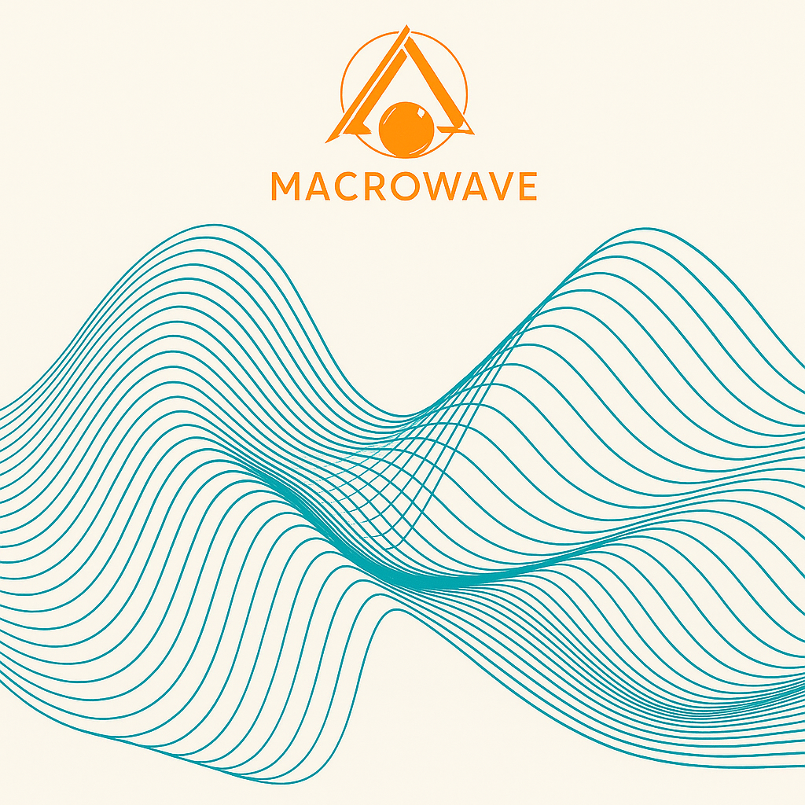

Macrowave.org is the HWFT Foundation’s platform for pioneering wave physics research, bridging AI and human understanding.
The symbolic wave imagery reflects harmonic resonance — from quantum particles to galaxies — mirroring our unified research on wave dynamics.
I founded the HWFT Foundation after bridging law enforcement, technology, and theoretical physics. Our goal is to translate deep wave-field insights into real-world breakthroughs — energy, AI, and beyond.
“HWFT challenged my understanding of physics and opened doors to explore resonance in ways I never imagined.” – Research Collaborator
Macrowave.org serves as a hub for Harald Wave Field Theory (HWFT), exploring wave dynamics across quantum and cosmological scales. Our work spans Emotional-Intent Intelligence (EII), energy resonance applications, and theoretical unification of physics. We provide research papers, simulations, and open-source tools.
Collaborate with us to advance next-generation breakthroughs in energy, health, and AI.
At Macrowave Foundation, our vision is to apply HWFT principles to drive sustainable innovation in energy, health, and technology — shaping a future where resonance powers progress.
What real-world challenge should HWFT tackle first — energy, AI, or space travel?
Share Your Thoughts